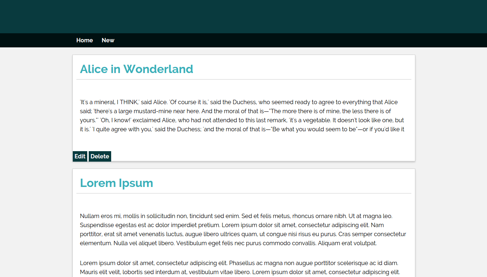
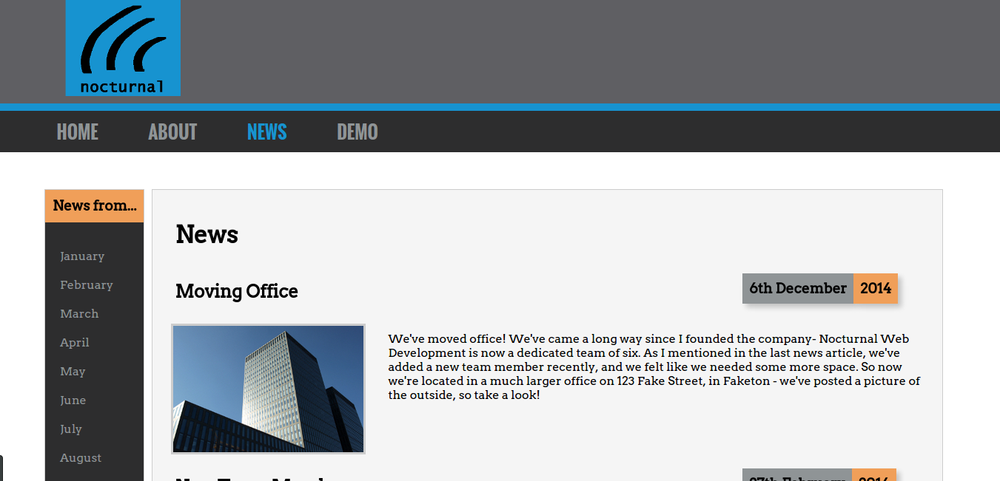

I program things, mostly for the web. If you want a developer with a background in Computer Science
who's enthusiastic to learn new things, drop me a line via one of the methods
above and we can chat. Below are some of my previous projects, take a look...

Ruby on Rails Blog
As a side project to learn Rails and SASS, I made a simple blog capable of posting, editing
and deleting articles.
I worked with a team of people for a client within the university to develop a Twitter web app
that allowed a user to manage and analyse data from a Twitter account.
I worked with the committee of the University of Sheffield Roleplaying Society (NODDSoc) to make a website
they could use for news, posting about current games, and general info. This was a good experience of seeing
a website project through from start to finish (and maintaining after development), for a real client.
I worked with a friend on a NodeJS messaging app, doing most of the frontend design and development,
including both SASS styling and also JavaScript for interactive content. I also helped setup build-tools
and processes to aid in the app's development.
Technologies Used
NodeJS
Express
MongoDB
Sass
Grunt
Jasmine
JavaScript

Static Site and Canvas Demo
For an assignment, I made a company site using HTML, CSS and JavaScript (for an interactive canvas game).
This was good experience in making a site to requirements, especially requirements to do with accessibility
(choosing colours suitable for colour blind people, structuring content optimally for screen readers, generally
fulfilling the W3C's guidelines on accessibility.)
With a team of two others, I helped make a web app that would estimate where a particular soldier (user's choice)
from the Sheffield area died during the First World War. We didn't finish the website, but it was an interesting
insight into web APIs and web scraping with Python. Plus, we came third!